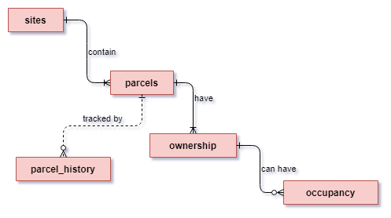

| pg_column_name | pg_column_type | pg_column_comment |
|---|---|---|
| site_id* | text | Unique identifier for the site. |
| site_name* | text | Accepted name for the site. |
| main_habitat_code | text | High level categorisation of the main habitat type across the site. Selected from a unique list of values. |
| site_category_code | text | Categorisation of site from an operational point of view. Selected from a unique list of values. |
| notes | text | Free text notes about the site. |
| site_privacy_code* | text | |
| site_wildness_code | text | |
| Note: | ||
| * mandatory field |
Technical Guide
Introduction
All nature reserves the Trust manages are are made up of discrete parcels of land. Some of the parcels have been purchased by the Trust, others are leased (usually on a long term basis).
The Trust needs a way to know what land holdings it currently owns and which it leases. This information is usually tracked through a Land Terrier. It is beyond the scope of the GIS database replicate all the features of a land terrier as this requires complex bi-temporal modelling and must consider slowly changing dimensions (SCDs) to maintain a full audit trail.
In the absence of a full Land Terrier, some useful features have been implemented to track changes over time.
Database Configuration
Service
Postgresql Service file… etc… ## Roles land_administrator gis_administrator ## Loading from backup # Schema Definition

Tables
Sites
Sites are a classification given for a group of land holdings (parcels) that the Trust has an interest in; these are usually classed as nature reserves but could also constitute buildings or farms.
Site geometries must only be constructed from parcels
All areas in a site with or without known ownership/tenure must be accounted for on the parcel layer
| pg_constraint_name | pg_constraint_def | pg_constraint_comment |
|---|---|---|
| sites_pkey | PRIMARY KEY (site_id) | Record identifier. Must be UNIQUE and NOT NULL. |
| sites_dom_site_privacy_fk | FOREIGN KEY (site_privacy_code) REFERENCES dom_site_privacy(site_privacy_code) ON UPDATE CASCADE | Maintains referential integrity. |
| sites_dom_site_wildness_fk | FOREIGN KEY (site_wildness_code) REFERENCES dom_site_wildness(site_wildness_code) ON UPDATE CASCADE | Maintains referential integrity. |
| pg_privilege_type | pg_privilege_grantees | pg_privilege_description |
|---|---|---|
| SELECT | gis_admin, land_administrator, standard_users | Allowed to view the data in the table. |
| INSERT | gis_admin | Allowed to add new rows of data. |
| UPDATE | gis_admin | Allowed to modify the data in existing rows. |
| DELETE | [Administrator Only] | Allowed to delete rows of data from the table. |
Note
The sites table does not have a geometry. The full site table is created from a view that constructs the boundaries from the current YWT tenure parcels. The view can then be enriched by spatially comparing the parcels to externally sourced data sets.
Domains
| main_habitat_code | Main Habitat | Description |
|---|---|---|
| WOOD | Woodland and Forest | If the site is mainly considered a woodland reserve or the predominate landcover type is woodland. |
| HEATH | Heathland and shrub | If the site is mainly considered a heathland reserve or the predominate landcover type is heathland. |
| SCRUB | Scrub | If the site is mainly considered to be scrubland reserve or the predominate landcover type is scrub. |
| COAST | Coastal | If the site is mainly considered a grassland reserve or the predominate landcover type is grassland. |
| GRASS | Grassland | If the site is mainly considered a grassland reserve or the predominate landcover type is one of the grassland habitat types. |
| ROCK | Rocky | If the site is mainly considered rocky or sparesely vegetated i.e quarry, scree slopes, inland sand dunes. |
| ARBL | Arable and Horticulture | If the site is mainly considered an arable or horticultural site i.e community garden, orchard or arable farm. |
| WET | Wetland | If the site is mainly considered a wetland reserve or the predominate landcover type is wetland. |
| NA | No main habitat | If it is not possible to determine and assign a main habitat type this category can be used. It is also used for the administrative category. |
| site_category_code | Site Category | Description |
|---|---|---|
| NR | Nature Reserve | The default category. A protected area established to conserve biodiversity, safeguard habitats, and promote ecological integrity. These sites are often designated for the preservation of native flora and fauna, offering a sanctuary for wildlife. These sites welcome visitors where they can engage in guided walks and wildlife observation, all while fostering a deeper appreciation for our natural ecosystems. |
| EX | Explorer Site | A site designated for encouraging active engagement and exploration of natural landscapes. Explorer Sites serve as gateways for individuals to discover and learn about nature, promoting conservation awareness through hands-on experiences. These sites will usually have a visitor centre or other similar visitor enagement facilities. They may also be called ‘gateway’ sites. |
| WLD | Wild | This category encompasses areas that are largely untouched by human activity. These sites promote minimal human interference, allowing nature to thrive without significant management. Wild areas are essential for preserving biodiversity and providing habitat for various species. There may be little to no visitor infrastructure and no ongoing mangement. |
| ARC | Arc Site | This is a conservation area specifically designed to serve as a refuge for vulnerable species and a hub for ecological restoration efforts. These sites may be strategically selected to connect fragmented habitats and enhance species movement across landscapes. The Arc approach emphasizes resilience and adaptability, focusing on both the preservation of existing biodiversity and the restoration of degraded habitats. the sensitivity of these sites often mean they will not be open to the public. |
| DON | Donor site | A conservation area where biodiversity is actively cultivated and managed to provide resources for other conservation initiatives. These sites often focus on sustainable practices that promote the growth of native plants and animals, serving as a source for rewilding efforts and restoration projects elsewhere. Donor Sites contribute to regional biodiversity by supplying seeds, cuttings, or animal populations to help re-establish ecological balance in degraded areas. |
| FRM | Farm | In the context of nature conservation this is an active agricultural site that integrates sustainable practices with biodiversity conservation. They prioritise environemntally methods, such as organic farming, permaculture, and agroecology, to enhance soil health and support wildlife habitats. These sites often contribute to local ecosystems while providing food and resources for surrounding communities. Educational programs often highlight the connection between agriculture and conservation. This is not a category for old farms that may now be undergoing rewilding with no active farming taking place. |
| LM | Livestock Management | These sites focus on sustainable practices for raising animals while minimizing environmental impact. They are not fully operational farms but may be grassland sites where grazing stock are kept between rotations onto other sites. Generally speaking they may not be open to the public as there is little to no ecological interest and they are operational sites where visitors may be at risk. |
| AD | Administrative | These sites relate to administrative functions of the organisation. It could be offices, tools stores, shops or even education centres |
| site_wildness_code | Site Wildness | Description |
|---|---|---|
| W1 | Wild | Relaxed, accessible and welcoming all year- round. An introduction to Yorkshire’s wild places for all ages, complete with creature comforts. |
| W2 | Wilder | A step off the beaten track, where visitors can explore and nurture their budding passion for Yorkshire’s wildlife. |
| W3 | Wildest | Really wild spaces, often hosting seasonal spectacles, for the really adventurous who aren’t shy in navigating the great outdoors! |
Parcels
Parcel geometries form the building blocks of sites they may or may not be registered with HM Land Registry. The mapped parcels must adhere to the following rules;
Parcel geometries must be valid and topologically correct
Parcels must be reference the site they are part of
Important
A parcel version is archived to the parcel_history table when the valid_to field is modified. It should be left NULL for boundary corrections and adding missing information.
| pg_column_name | pg_column_type | pg_column_comment |
|---|---|---|
| parcel_uuid* | uuid | Unique identifier for the parcel. It remains with the parcel forever and is used to maintain a historical record. |
| site_id* | text | Site that the parcel belong to. The geometry of the parcel will be a constituent part of the site geometry. |
| parcel_alias* | text | An alias for the parcel to help distinguish it on a site. It must be unique within each site. |
| boundary_type_code* | text | Indicates if the boundary is a proposed boundary, Indicative boundary, or legal boundary with valid values. |
| notes | text | Free text for adding any notes specific to the parcel. |
| area_ha | numeric | Autogenerated, total area of the parcel in hectares. |
| valid_from | date | Indicates when the parcel in its current form can be considered valid from. |
| valid_to | date | Indicates when the parcel is valid to. NULL represents that the current parcel is valid. Adding in a valid_to date will archive a copy of the current parcel to the `parcel_history` table. |
| geom | geometry(MultiPolygon, 27700) | Represents the outer boundary of each parcel as a polygon feature. |
| updated_at* | timestamp without time zone | Indicates the last time the feature was updated. |
| updated_by* | text | Indicates the user that last updated the feature. |
| Note: | ||
| * mandatory field |
| pg_constraint_name | pg_constraint_def | pg_constraint_comment |
|---|---|---|
| parcels_pkey | PRIMARY KEY (parcel_uuid) | Record identifier. Must be UNIQUE and NOT NULL. |
| parcels_site_id_fkey | FOREIGN KEY (site_id) REFERENCES land_admin.sites(site_id) ON UPDATE CASCADE ON DELETE CASCADE | Maintains referential integrity. |
| unique_site_parcels | UNIQUE (site_id, parcel_alias) | Ensures that a site cannot have two parcels with the same name. |
| check_parcel_has_valid_dates | CHECK ((valid_to > valid_from)) | Checks that the valid_to date is after the valid_from date. |
| pg_privilege_type | pg_privilege_grantees | pg_privilege_description |
|---|---|---|
| SELECT | [Administrator Only] | Allowed to view the data in the table. |
| INSERT | [Administrator Only] | Allowed to add new rows of data. |
| UPDATE | [Administrator Only] | Allowed to modify the data in existing rows. |
| DELETE | [Administrator Only] | Allowed to delete rows of data from the table. |
| pg_trigger_name | pg_trigger_comment | pg_trigger_function | pg_trigger_function_comment |
|---|---|---|---|
| tr_01_update_modified | Logs when data is changed. | utils.trf_update_modified | Sets updated_at and updated_by to the current datetime and user, respectively. |
| tr_02_update_area_ha | Responds to changes in the geometry to keep the area up to date. | utils.trf_update_areaha | Calculates area_ha to 4 d.p. from the geometry. |
| tr_03_update_parcel_history | Responds when the valid_to field is updated. |
land_admin.trf_log_parcel_history | The inputted valid_to field becomes the new valid_from. A copy of the old values from the modified row are inserted into the parcel_history table. The new valid_to field is set to NULL. |
Domains
| boundary_type_code | Boundary Type | Description |
|---|---|---|
| IND | Indicative | This indicates that the boundary is indicative only and does not necessarily reflect the legally agreed boundary. This is a useful flag to allow data users to take care when referring to these boundaries. |
| PROP | Proposed | This indicates a potential new site where there is no legal agreement yet in place. |
| LEGAL | Legal | Indicates that the boundary matches, as far as possible, the legally agreed extents. All boundaries are only ever truly indicative and should never be assumed to be infallible but more confidence can be given to sites with this flag that the best efforts have been made to accurately denote the true extent. |
Ownership
Tenure defines the ownership of the land parcels. The rows in the freehold tenure table function as timeline entries, recording the tenure history over time. Land ownership transitions immediately to the new owner upon the end of the previous ownership, hence there is only a tenure start field. Using this structure it is very easy to maintain the narrative assuming the following assumptions
Tenure must not have gaps in date ranges. This would indicate that the parcel is not owned by anyone which cannot be true.
A parcel cannot have the more then one freeholder at the same time.
| pg_column_name | pg_column_type | pg_column_comment |
|---|---|---|
| ownership_uuid* | uuid | Unique tracking id. |
| parcel_uuid* | uuid | References the parcel the tenure applies to. |
| freehold_title | text | The freehold title if applicable. This will be the official Land Reg title number. |
| landowner* | text | Details who holds the freehold. The Wildlife Trust must be 'Trust'. |
| ownership_type_code* | text | Details the type of freehold tenure populated from a set of valid values. |
| ownership_date_start | date | Date when the freehold started. For freeholds prior to The Trust from times in memoriam, this can be left blank. The freehold ends (through sale/disposal) with the addtitions of a subsequest rows `freehold_start_date`. |
| purchase_amount_gbp | numeric | Purchase ammout in GBP paid by the current freeholder (if known). Gifts should be `0`. |
| ownership_notes | text | Notes relevant to the ownership. |
| ownership_file_notes | json | File notes and links to documentation. |
| updated_at* | timestamp without time zone | Indicates the last time the feature was updated. |
| updated_by* | text | Indicates the user that last updated the feature. |
| transfer_type_code | text | Indicates how the parcel came into the possession of the landowner. |
| Note: | ||
| * mandatory field |
| pg_constraint_name | pg_constraint_def | pg_constraint_comment |
|---|---|---|
| ownership_pkey | PRIMARY KEY (ownership_uuid) | Record identifier. Must be UNIQUE and NOT NULL. |
| ownership_parcel_uuid_fkey | FOREIGN KEY (parcel_uuid) REFERENCES land_admin.parcels(parcel_uuid) ON UPDATE CASCADE ON DELETE CASCADE | Maintains referential integrity. |
| check_trust_has_start_date | CHECK ((NOT ((ownership_date_start IS NULL) AND (landowner = ‘Trust’::text)))) | Ensures that land parcels considered under The Trust’s holdings have a commencement date. |
| pg_privilege_type | pg_privilege_grantees | pg_privilege_description |
|---|---|---|
| SELECT | [Administrator Only] | Allowed to view the data in the table. |
| INSERT | [Administrator Only] | Allowed to add new rows of data. |
| UPDATE | [Administrator Only] | Allowed to modify the data in existing rows. |
| DELETE | [Administrator Only] | Allowed to delete rows of data from the table. |
| pg_trigger_name | pg_trigger_comment | pg_trigger_function | pg_trigger_function_comment |
|---|---|---|---|
| tr_01_update_modified | Logs when data is changed. | utils.trf_update_modified | Sets updated_at and updated_by to the current datetime and user, respectively. |
Domains
| ownership_type_code | Ownership Type | Description |
|---|---|---|
| FH | Freehold | Freehold is a type of property ownership that grants the owner full control and rights over the land and any structures on it for an indefinite period. This tenure type is the most complete form of ownership. |
| U | Unknown ownership | Unknown tenure types are where the land is being actively managed but there is no agreement in place or no documentation can be found to establish the type of tenure that is in place. These parcels need to be resolved as a priority and so it is very useful to flag instances where this occurs. |
| transfer_type_code | Transfer Type | Description |
|---|---|---|
| SALE | Sale | Land given in exchange for money. |
| GIFT | Gift | Land given freely. |
| EXC | Exchange | Land exchanged for another piece of land. |
| ADV | Adverse posession | Legally claimed ownership of the land due to extended occupation. |
| U | Unknown | Unknow how the land was acquired. |
Occupancy
Land parcels may be leased by the Trust from a 3rd party. The Trust can also lease out land that it owns or sub-lease if it is in an agreement of its own. Parcels may not have a leasehold so this is optional. This table tracks both parcels that the Trust leases and those that it leases out..
- Leases must reference a freeholder (either directly or indirectly through a sub-lease).
- A leaseholder cannot lease form themselves.
| pg_column_name | pg_column_type | pg_column_comment |
|---|---|---|
| occupancy_uuid* | uuid | Unique tracking id. |
| ownership_uuid* | uuid | Freehold tenure the lease is from. |
| leasehold_title | text | The leasehold title if applicable. This will be the official Land Reg title number. |
| occupant* | text | The entity in receipt of the lease. Must be 'Trust' if the recipient is The Wildlife Trust. |
| occupancy_type_code* | text | Details the type of lease populated from a set of valid values. |
| occupancy_date_start | date | Date (inclusive) of when the tenure started. |
| occupancy_date_end | date | Date (exclusive) of when the tenure ended/expired. |
| occupancy_notes | text | Notes relevant to the freehold. |
| occupancy_file_notes | json | File notes and links to documentation. |
| occupancy_amount_gbp | numeric | Total amount paid for the over the period. |
| updated_at* | timestamp without time zone | Indicates the last time the feature was updated. |
| updated_by* | text | Indicates the user that last updated the feature. |
| renewal_type_code* | text | Categorises how to treat the occupancy after the expiration of the term. |
| termination_date | date | This is when the occupant ceases to have an affiliation under the current terms. This is necessary as it is possible for tenancies to 'hold over' after the tenancy term ends. In this situation, the parcel will show as having a lease expired but still affiliated with the client. If a new lease is agreed, the termination date should end the daye before the new tenancy starts. |
| Note: | ||
| * mandatory field |
| pg_constraint_name | pg_constraint_def | pg_constraint_comment |
|---|---|---|
| occupancy_pkey | PRIMARY KEY (occupancy_uuid) | Record identifier. Must be UNIQUE and NOT NULL. |
| occupancy_ownership_uuid_fkey | FOREIGN KEY (ownership_uuid) REFERENCES land_admin.ownership(ownership_uuid) ON UPDATE CASCADE ON DELETE CASCADE | Maintains referential integrity. |
| check_occupancy_end_after_start | CHECK ((occupancy_date_end >= occupancy_date_start)) | Checks that the occupancy_date_end is after the occupancy_date_start |
| check_trust_has_start_date | CHECK ((NOT ((occupancy_date_start IS NULL) AND (occupant = ‘Trust’::text)))) | Ensures that land parcels managed by The Trust have a commencement date. |
| exclude_same_occupant_date_overlaps | EXCLUDE USING gist (ownership_uuid WITH =, daterange(occupancy_date_start, occupancy_date_end) WITH &&) | Makes sure that the same occupant cannot have duplicate leases during the same timeframe. |
| pg_privilege_type | pg_privilege_grantees | pg_privilege_description |
|---|---|---|
| SELECT | [Administrator Only] | Allowed to view the data in the table. |
| INSERT | [Administrator Only] | Allowed to add new rows of data. |
| UPDATE | [Administrator Only] | Allowed to modify the data in existing rows. |
| DELETE | [Administrator Only] | Allowed to delete rows of data from the table. |
| pg_trigger_name | pg_trigger_comment | pg_trigger_function | pg_trigger_function_comment |
|---|---|---|---|
| tr_01_update_modified | Logs when data is changed. | utils.trf_update_modified | Sets updated_at and updated_by to the current datetime and user, respectively. |
Domains
| occupancy_type_code | Occupancy Type | Description |
|---|---|---|
| LH | Leasehold | Leasehold is a form of property tenure where the leaseholder (tenant) holds the right to occupy and use the property for a specified period, as outlined in a lease agreement, which can range from a few years to several decades. The leaseholder does not own the land; ownership remains with the freeholder (landlord). Leaseholders typically pay rent to the freeholder and may be responsible for maintenance and other costs. At the end of the lease term, ownership and possession of the property revert to the freeholder. |
| MA | Management Agreement | A Management Agreement is a legal contract between a property owner and a management company or individual responsible for overseeing the operation and maintenance of the property. This agreement outlines the responsibilities of the manager, including property upkeep, financial management, tenant relations, and compliance with regulations. It typically specifies the duration of the agreement, fees, and performance expectations, allowing property owners to ensure their assets are effectively managed without directly handling day-to-day operations. |
| LI | Licence | A Licence is a legal agreement that permits an individual or entity to use a property owned by another party for a specific purpose, without transferring any ownership rights. Unlike a lease, a licence is usually more flexible and can be granted for a short term or for a specific activity (e.g., holding an event, accessing land for recreation). Licences are generally revocable and do not create an interest in the property, meaning the licensor retains control and can terminate the agreement as stipulated. |
| FBT | Farm Business Tenancy | A Farm Business Tenancy (FBT) is a specific type of agricultural tenancy in the UK that allows a tenant to farm land for a defined period while adhering to the terms of the tenancy agreement. FBTs typically grant tenants the right to cultivate crops, keep livestock, and engage in agricultural activities. They are governed by specific legislation, providing tenants with certain protections, such as security of tenure and the ability to claim compensation for improvements made to the property. This arrangement supports sustainable farming practices while enabling landowners to retain ownership of their land. |
| U | Unknown occupation | Unknown tenure types are where the land is being actively managed but there is no agreement in place or no documentation can be found to establish the type of tenure that is in place. These parcels need to be resolved as a priority and so it is very useful to flag instances where this occurs. |
| renewal_type_code | Renewal Type | Description |
|---|---|---|
| HOLD | Holdover | Tenancy remains after the expiration of the lease so long as the tenant continues payments to the landlord. |
| OUT_1954 | Contracted out of Landlord and Tanants Act 1954 | Excluded from the provisions of sections 24 to 28 of the Landlord and Tenants Act 1954. If this is the case then then there is no holding over of the lease after the expiry and a new lease must be negotiated. |
| PERIODIC | Periodic | Tenancies that do not have an end date specified. |
| NONE | None | Marks that lease terminates at the end of the term. This is used where a contract specifically states the contract will end ona specific date and is also used for archiving tenancies that have expired. |
Parcel History
Changes to parcels are an extended feature of the GIS data model. They
Caution
Parcel history tracking is setup using database triggers on the parcels table. It is not necessary to manually update data once the model has been established. If you notice errors/discrepancies, please notify the database administration team.
| pg_column_name | pg_column_type | pg_column_comment |
|---|---|---|
| parcel_history_uuid* | uuid | Unique identifier for the history record. |
| parcel_uuid* | uuid | Identifier of the parcel in the parcel table. |
| site_id* | text | References the site the parcel was a part of between the valid dates. Note this facilitates the transfer of parcels between sites and maintaining a history. |
| valid_from | date | Indicates when the information about the parcel should be considered valid from. Not that the deafult is for this to start as NULL indicating that up until the valid to date, the parcel was considered valid. |
| valid_to* | date | Indicates the upper limit of when this version of the parcel data should be considered valid from. It should align equal teh valid_from date of the corresponding parcel on the parcels table. |
| geom | geometry(MultiPolygon, 27700) | Represents the outer boundary of each parcel as a polygon feature. |
| updated_at* | timestamp without time zone | Indicates the last time the feature was updated. |
| updated_by* | text | Indicates the user that last updated the feature. |
| notes | text | Free text field for notes about this version of the parcel history. |
| Note: | ||
| * mandatory field |
| pg_constraint_name | pg_constraint_def | pg_constraint_comment |
|---|---|---|
| parcel_history_pkey | PRIMARY KEY (parcel_history_uuid) | Record identifier. Must be UNIQUE and NOT NULL. |
| parcel_history_parcel_uuid_fkey | FOREIGN KEY (parcel_uuid) REFERENCES land_admin.parcels(parcel_uuid) ON UPDATE CASCADE ON DELETE CASCADE | Maintains referential integrity. |
| parcel_history_site_id_fkey | FOREIGN KEY (site_id) REFERENCES land_admin.sites(site_id) ON UPDATE CASCADE ON DELETE CASCADE | Maintains referential integrity. |
| check_parcel_has_valid_dates | CHECK ((valid_to >= valid_from)) | Checks that the valid_to date is after the valid_from date. |
| exclude_parcel_overlapping_times | EXCLUDE USING gist (parcel_uuid WITH =, daterange(valid_from, valid_to) WITH &&) | Ensures that the same parcel cannot have multiple versions a the same time. |
| pg_privilege_type | pg_privilege_grantees | pg_privilege_description |
|---|---|---|
| SELECT | [Administrator Only] | Allowed to view the data in the table. |
| INSERT | [Administrator Only] | Allowed to add new rows of data. |
| UPDATE | [Administrator Only] | Allowed to modify the data in existing rows. |
| DELETE | [Administrator Only] | Allowed to delete rows of data from the table. |
| pg_trigger_name | pg_trigger_comment | pg_trigger_function | pg_trigger_function_comment |
|---|
Process
Important
The land administration process has been designed to be conducted using QGIS by someone with the land_administrator database privileges. The relationships and layers have been setup in a QGIS project which can be found in the land_admin schema.
Adding a new site
- Add a new row to the
land_admin.sitestable - Check the spelling of the
site_nameas this will be the the definitive name and must be used as throughout the Trust. - Create an alpha-numeric code to use as the
site_id. Try to make it a three letter code to keep it as simple as possible. This will become the unique identifier for the site and must be used consistently across the Trust.
Adding a new parcel
Note
Inserting/updating parcel geometries requires advanced digitising techniques to maintain topologies, snap to nodes, and avoid overlaps. Any errors will result in misaligned site boundaries so this must be carried out by a GIS specialist.
- Use the INSPIRE polygons layer as a basis to digitise a new parcel on the
land_admin.parcels. If the polygons disagree with the deeds, seek advice from Lana Huntley (Estates Officer). - Complete the required information including designating which site the parcel belongs to. Leave the
valid_toandvalid_fromfields asNULL.
Warning
Setting the valid_from at this stage will create a historical version of the parcel on the parcel_history table. This is only necessary when the geometry is being updated, not at creation.
- Save the data to generate the
parcel_uuid.
Adding Parcel Ownership
Important
Every parcel must have an owner before YWT became involved in the parcel. Even if the owner is unknown, the landowner field must not be NULL. The ownership start date for this prior landowner can be *NULL* as the model is not interested with tracking their land terrier history, only YWT’s.
- Select the newly constructed parcel with the identify tool
 to open up the widget.
to open up the widget. - Add a new entry to the
land_admin.ownershiplayer for the site . Each site owner follows on from the next through sale/gift etc. Add the records with the date of when the new landowner took on the parcel. If the Trust is the owner, the landowner must be entered as ‘Trust’ to enable accurate reporting.
. Each site owner follows on from the next through sale/gift etc. Add the records with the date of when the new landowner took on the parcel. If the Trust is the owner, the landowner must be entered as ‘Trust’ to enable accurate reporting. - Save the edits to generate an
ownership_uuid.
Adding Parcel occupancy
- Open the parcel widget using the steps in Adding Parcel Ownership.
Functionality
Views
%%{init: { 'gantt': {'leftPadding': 200} } }%%
gantt
title Tenure History for a Parcel
dateFormat YYYY
axisFormat %Y
section Original Landowner
Freehold :3rdownership1, 2010, 10y
section YWT
Leasehold :ywtoccupancy1, 2017, 3y
Freehold :ywtownership1, after 3rdownership1, 2035
section 3rd Party
Leasehold :3rdoccupancy1, 2023, 4y
Exports
Standards
There are two main spatial views that are used for exporting to the common format:
public.sites_export
public.tenure_export
A summary of the tenure is also provided:
land_admin.vw_tenure_all
FAQs
Why does the sites table not have a geometry?
It is important to maintain the spatial relationship between the land parcels and the site boundaries. It is easier to build the site boundaries on demand through a view than to remember to keep the geometries in sync manually.